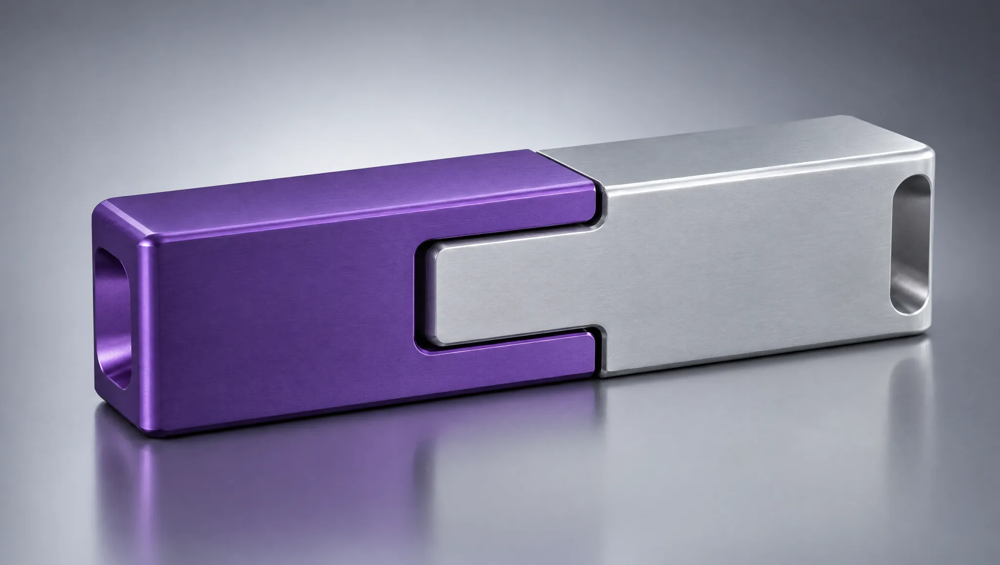

Fit and Evidence
7 Strong, 4 Partial
Every requirement in the posting, rated as a hiring manager would. The partial ones are where the interview should probe.
Select a segment to see the evidence.
Argument
Why Now
A design-led seller fixes the weakness analysts name.
The gap Gartner names
of Wipro DX staff are in APAC
And 6% are creative. Wipro has delivery scale and is short of onshore people who lead the design conversation.
What I bring
years in design-led consulting
Architect and computational designer. Sixteen years selling to executives in New York and London.
What I still need
quarters to close it
Platform depth on Adobe, Salesforce, SAP Commerce and Pega through enablement and paired pursuits.
Translation
What It Equals
Seven things I have done, mapped to the part of the role they prepare me for.
What I did
Co-created a strategic advisory service line at Foster + Partners covering environmental strategy, digital transformation and spatial consulting
What it equals here
Originating a new offer inside a firm organised around design studios and delivery groups, the way DX works with Designit and the platform practices
What I did
Won a multi-year plan for a global pharmaceutical company's property portfolio
What it equals here
The land-and-expand ladder in life sciences, starting from a portfolio-wide assessment
What I did
Presentations to Fortune 500 chief executives that helped studios win contracts worth more than £10m
What it equals here
Being the specialist who helps the account owner win, which is the practitioner overlay
What I did
Led department business development at SOM New York, presenting to Wall Street banks
What it equals here
Overlay selling into banking, the largest Americas 2 sector
What I did
Won more than $2m a year at WSP through cold and warm outreach
What it equals here
Hunting for new logos
What I did
Trained boards and executive teams on AI tools at Atlas Learn
What it equals here
Credibility in AI-led experience conversations, where Wipro says client budgets are moving
What I did
Set performance targets that fitted clients' budgets and ESG commitments
What it equals here
Building value cases in the client's own numbers
Show the full requirements table
| Requirement | Rating | Evidence | How I close the gap |
|---|---|---|---|
| 10 to 15 years in professional services or technology | Strong | Eighteen years in professional services since 2008, at Rafael Viñoly Architects, WSP, SOM and Foster + Partners, plus Atlas Learn since 2025. | No gap to close |
| 5 to 7 years selling digital experience technology to North American C-suite | Partial | Sixteen years selling consulting to executives, including Fortune 500 chief executives, Wall Street banks and technology companies in North America. At Foster + Partners I co-created a service line that took the firm into digital transformation and spatial consulting. My selling has been design, advisory and transformation services, without DX platform services. | Pair with a DX solution architect on every pursuit in the first two quarters, earn Adobe and Salesforce sales accreditations in the first 90 days, and lead with the design and advisory front end where my experience is direct. |
| Consultative selling | Strong | Every engagement I won started with the client's own data: carbon baselines, portfolio assessments, performance targets set against budgets and ESG commitments. | No gap to close |
| Leading large transformation deals, $20m minimum | Partial | Led pitches, bids and competitions that won more than £10m a year in fees as Associate Partner. Won a multi-year contract with a global pharmaceutical company for a portfolio-wide plan. Presentations to Fortune 500 chief executives helped win contracts worth more than £10m. I have not closed a single $20m services contract. | Use the deal ladder: build large deals from a small first phase plus run, with Wipro's deal desk and a leadership sponsor. I have structured multi-year programmes, and the run economics are Wipro's strength. |
| Managing a $20m to $25m portfolio | Partial | Held a fee target of more than £10m a year at Foster + Partners and more than $3m a year at SOM, across several clients and studios. | Split the book into protect, expand and new logo targets in month one, and run the weekly pipeline and forecast rhythm on the Portfolio page. |
| Understanding of experience technology trends | Partial | Computational designer by training: scripting, simulation, Unreal Engine and digital twins. Co-founder of an AI training company that teaches executives to use Claude Code, Copilot Studio and other tools. This site is my working map of DX platforms, triggers and competitors. | Deepen platform knowledge on Adobe, Salesforce, SAP Commerce and Pega through partner enablement in the first 90 days. |
| Communication and presentation | Strong | Presented at the COP26 Buildings Pavilion and UN COP28, chaired panels at Foster + Partners Earth Day and COP Week, taught at Imperial College London and City University of New York, and trained more than 250 senior professionals. | No gap to close |
| Self-starter who learns quickly | Strong | Co-founded the Technology Group at Rafael Viñoly Architects, co-created a service line at Foster + Partners and co-founded Atlas Learn. | No gap to close |
| Analytical skills | Strong | Building performance simulation, Python and C#, whole life carbon tools, and the models on the Pursuit and Portfolio pages of this site. | No gap to close |
| Working in a matrix | Strong | Foster + Partners runs design studios, specialist groups and partners across many offices. As a specialist I won work for studios that owned the client, which is the practitioner model Wipro uses. | No gap to close |
| Willingness to travel extensively | Strong | Projects in North America, Europe, the Middle East and Asia. US citizen, so I can work in the US without sponsorship. | No gap to close |